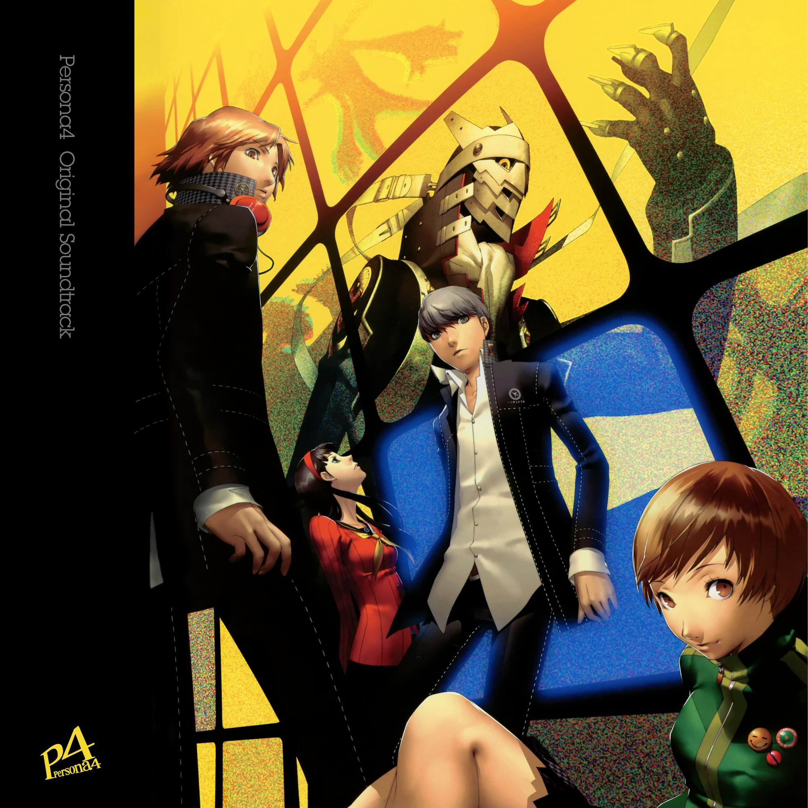

CESAR School — Ciência da Computação · 2026–2029
Estudante de Ciência da Computação com interesse em desenvolvimento de jogos e programação. Ainda no início da graduação, mas determinado a crescer na área.
Sobre
Sou Carlos Henrique, estudante de Ciência da Computação no CESAR School em Recife. Estou no início da graduação, com foco em desenvolvimento de software e especial interesse na área de jogos digitais.
Tenho experiência inicial com Python, JavaScript e desenvolvimento web, além de ter concluído projetos práticos voltados para acessibilidade em jogos e criação de experiências interativas.
CESAR School
2026 — 2029
Ciência da Computação
Recife, PE

♪ TOCANDO AGORA
Heartbeat, Heartbreak
Shoji Meguro — Persona 4 Original Soundtrack
1:24
3:52
⏮
▶
⏭
Interesses
-
01
Desenvolvimento de jogos Uma das razões de me interessar por programação e de eu estar em CC.
-
02
Python Linguagem que mais aprendi até agora e sinto mais interesse.
-
03
Inteligência artificial Ainda no começo, mas é uma das áreas que mais quero entender.
-
04
Ainda descobrindo Primeiro período. Todo dia descubro mais sobre meus interesses na área.
Inspiração
A tecnologia sempre me fascinou e despertou meu interesse. Estar estudando nessa área me fez perceber que estou no lugar certo e quero continuar nela durante muito tempo.
Social Links